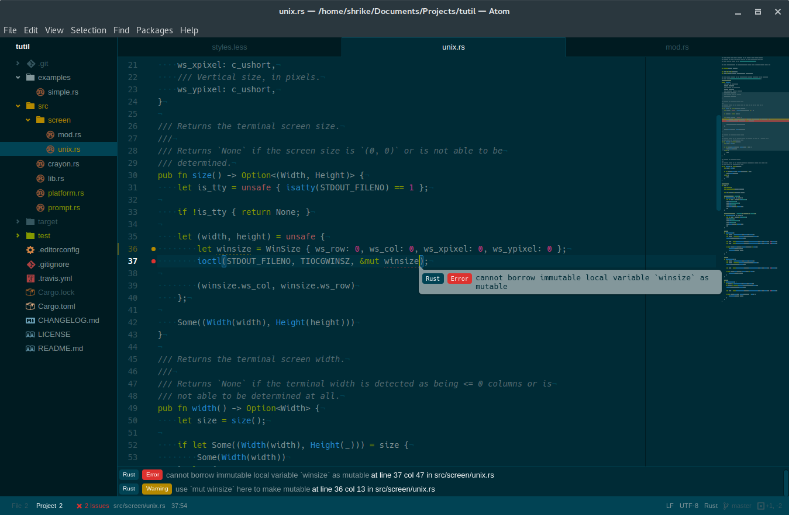
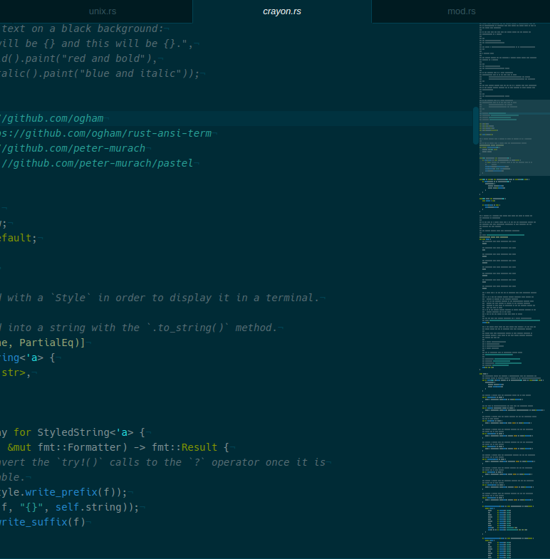
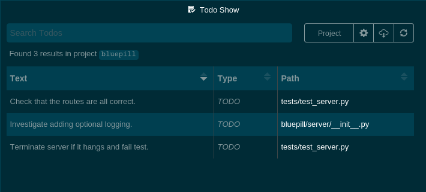

Some Atom Packages I Find Useful
Jul 17, 2016 · 3 minute read · CommentsFor Future MeProgrammingAtom
I’ve switched back to using Atom after having switched to Spacemacs around six or eight months ago. Startup time — which was one of the factors that drove me away — has noticeably improved to the point where I don’t find it annoying and the core text editing components have continued to mature.
There are still some things I miss about Emacs/Spacemacs however, such as the mnemonic keybindings, evil, which-key, and the ability to run it in a terminal. Also, keymaps are still fairly painful to deal with, with packages often overriding keybindings from either Atom core or other packages. In addition to this, there also still does not seem to be any way to define keybindings that are context-aware, a feature which would be useful for quite few packages that are only relevant with certain filetypes — markdown-preview, asciidoc-preview, and Emmet are examples of such packages.
In any case, I’ve switched back to Atom because I feel that it has sufficiently matured and the way the editor is designed allows for a level of extensibility that I think is essentially on par with Emacs, just without the harder to grasp and slightly funky Emacs Lisp (although I will admit I wish it was written in something other than JavaScript/CoffeeScript).
Now, let’s get into what I’ve found to be useful and/or interesting Atom packages that during day-to-day programming.
Linter
Linter is one of the first packages most people will want to install, and for a good reason. Similar in functionality to Flycheck for Emacs, Syntastic for Vim, and SublimeLinter for Sublime Text, Linter is a package for automatically running static code analysis, style checkers, and linters on your code either as you type or on each save. It adds a live collection of errors at the bottom of the window as well as indicators in the gutter and popups containing the error message when relevant code is selected.

Minimap
The Minimap package will be instantly recognisable to anyone who has used Sublime Text. It provides — as the name suggests — a zoomed out view of the current buffer. What makes the minimap package unique is the ability to extend it with extra features, such as displaying the current line the cursor is at, displaying currently selected text, displaying linter information, and displaying Git diff information.

EditorConfig
EditorConfig is incredibly useful for maintaining the same coding style across different editors and people. It’s actually not only an Atom package, it is a file format and a collection of text editor plugins; in fact, if it was exclusive to Atom its usefulness would be hindered greatly.
EditorConfig reads a .editorconfig file at your project’s root, in which you
define preferences such as the preferred EOL character, charset, indent size,
etc.
Here’s an example:
root = true
[*]
charset = utf-8
end_of_line = lf
indent_style = space
insert_final_newline = true
[*.rs]
indent_size = 4
[*.{md,toml}]
indent_size = 2
[.travis.yml]
ident_size = 2
You can find the Atom package for it here.
Project Manager
Project Manager is incredibly simple and does exactly what the name implies — it manages your projects. Usage is fairly simple: open the command palette and search for “project manager”; from there you can save, edit, and list projects like you would expect.

The list of projects are stored in a simple CSON file called projects.cson
under ~/.atom which looks like this:
bluepill:
title: "Bluepill"
paths: [
"/home/shrike/Documents/Projects/bluepill"
]
matrixpythonsdk:
title: "Matrix Python SDK"
paths: [
"/home/shrike/Documents/Projects/matrix-python-sdk"
]
tutil:
title: "Tutil"
paths: [
"/home/shrike/Documents/Projects/tutil"
]
Todo Show
Another incredibly simple, but useful package is Todo Show. Put succinctly, it finds all “TODO”, “FIXME”, etc. comments in the currently open project and displays them in an overview list.
